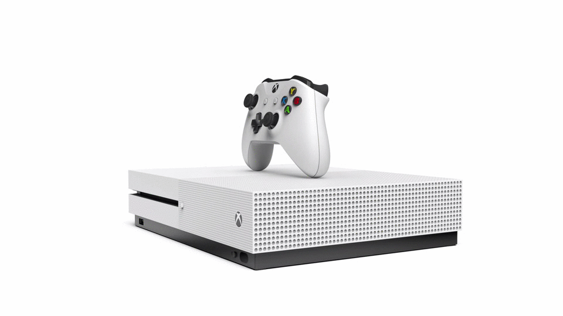
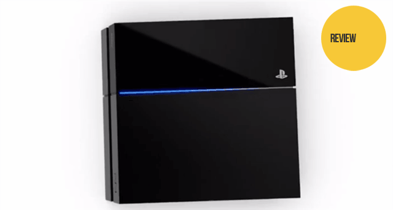

GAMING CONSOLES
Products our company Provied
Xbox One is a line of eighth generation home video game consoles developed by Microsoft. Announced in May 2013, it is the successor to Xbox 360 and the third console in the Xbox family. The original Xbox One's exterior casing consists of a two-tone "liquid black" finish; with half finished in a matte grey, and the other in a glossier black. The matte side of the top of the console consists of a large air vent. The design was intended to evoke a more entertainment-oriented and simplified look than previous iterations of the console; among other changes, the LED rings used by Xbox 360 are replaced by a glowing white Xbox logo used to communicate the system's status to the user. Due to the overall ventilation design of the console, the original Xbox One is designed to only sit horizontally. Xbox One is powered by an AMD "Jaguar" Accelerated Processing Unit (APU) with two quad-core modules totaling eight x86-64 cores clocked at 1.75 GHz, and 8 GB of DDR3RAM with a memory bandwidth of 68.3 GB/s. As for networking, Xbox One supports Gigabit Ethernet, 802.11n wireless, and Wi-Fi Direct and Xbox One supports 4K resolution video output and 7.1 surround sound.
The PS4 is Sony's most attractively designed piece of hardware. It's a beautiful system, with a sharp, slightly angled profile accented by a light bar that acts as a console status indicator. On the back, PS4 has gone digital-only with HDMI/optical ports, and no analog audio or video outputs. We appreciate the internal power supply — it sounds like a small thing, but it's one less object to sit on the shelf next to or behind the PlayStation 4. It's an impressive technical achievement. It's also compact enough to fade into your entertainment center without being distracting or ostentatious, and we appreciate that it retains the PS2's and PS3's ability to stand vertically. Those of you with frisky pets or children may want to invest in the vertical stand, sold separately, for some added stability. Moreover, it will charge controllers over USB while in standby mode. The DualShock 4 is the best controller Sony has ever made. It solved many of the problems that people faced with the DualShock 3. Its sticks are farther apart, with semi-concave pits in the middle designed to hold the tips of your thumbs in place. The shoulders feature actual concave triggers with pull similar to an Xbox 360 controller. However, it is a little heavier and bigger but it is much more comfortable to hold over long periods of time.